⚡
Электроассистент
Мотор помогает при вращении педалей. Три режима на пульте: сильный, стандартный и авто-эко.
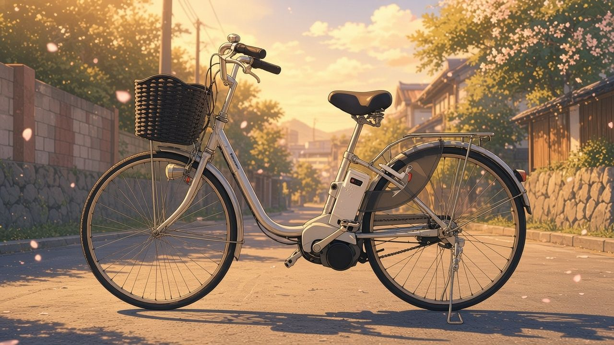
Городской электровелосипед с японского рынка: ассистент с 3 режимами, 3 скорости Shimano Nexus, тормоз Inter M, корзина, багажник и замки — всё уже на месте.
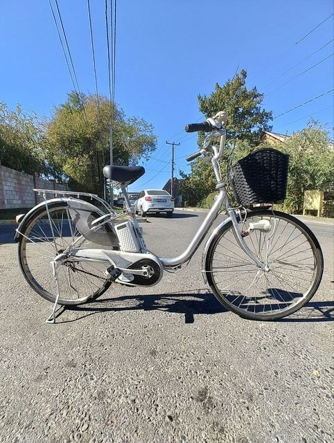
СлеваВыше — иллюстрация, а это настоящий велосипед, который вы получите. Ещё 48 фото ниже.
✏️ Иллюстрация в стиле анимеPanasonic создан для тех, кто хочет чаще ездить по делам и получать удовольствие от дороги — без лишней сложности.
Мотор помогает при вращении педалей. Три режима на пульте: сильный, стандартный и авто-эко.
Передачи спрятаны внутри втулки Inter-3 — переключаются даже на месте, без грязной открытой механики.
Передняя корзина и задний багажник — для покупок и повседневных вещей. Допустимую нагрузку уточняйте.
Встроенные решения для стоянки у магазина. Для долгой стоянки добавьте трос или цепь.
Настоящая съёмка именно этого велосипеда: надпись Panasonic на раме, пульт ассистента с режимами 強 / 標準 / オートエコ, переключатель Shimano Nexus на 3 скорости, задняя втулка, замок с ключом, фара и корзина.
Все фото — этот самый велосипед. Нажмите на любое фото в галерее ниже, чтобы рассмотреть деталь крупно.
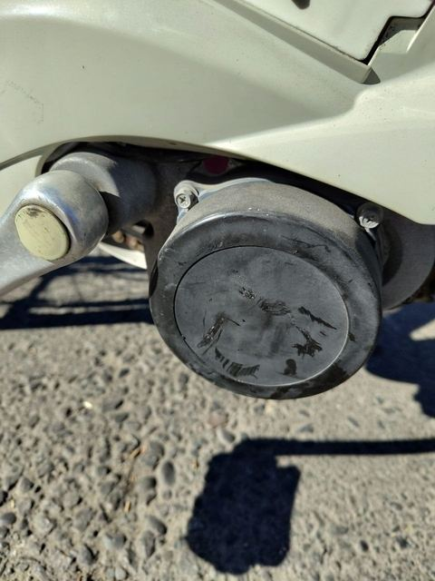
Мотор помогает при вращении педалей — легче трогаться, подниматься в горку и ехать с покупками. На руле пульт с тремя режимами: 強 (сильный), 標準 (стандартный) и オートエコ (авто-эко, сам экономит заряд). Это помощь велосипедисту, а не скутерный режим.
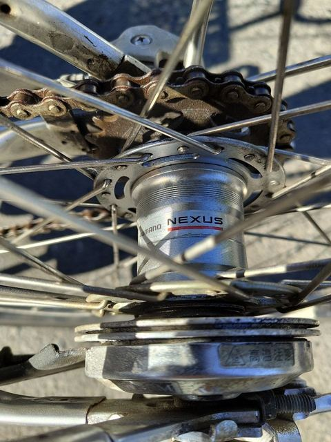
Три передачи спрятаны внутри задней втулки и переключаются поворотной ручкой Shimano. Переключать можно даже стоя на светофоре, а механизм защищён от грязи и почти не требует ухода.
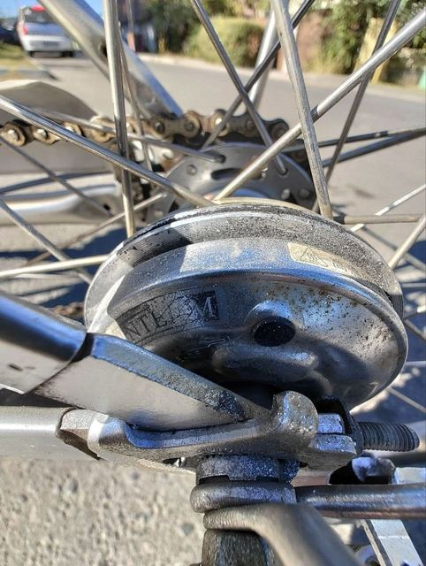
Закрытый роллерный тормоз со встроенным охлаждающим диском: механизм спрятан от воды и пыли, работает ровно и предсказуемо, рёбра отводят тепло при долгом торможении.
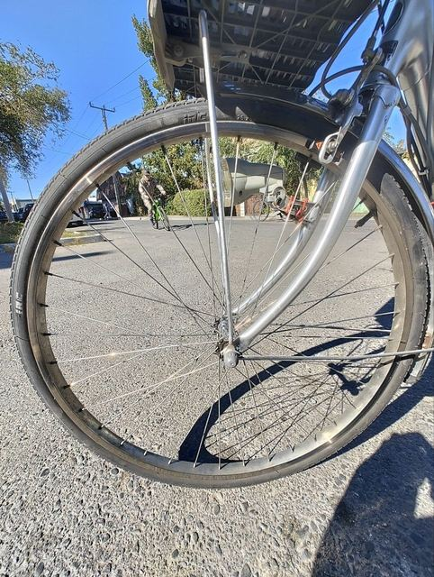
Прочная конструкция для тяжёлого городского велосипеда и ежедневной езды. На фото видно реальное состояние колёс этого экземпляра — подробнее покажем по видео в Telegram.
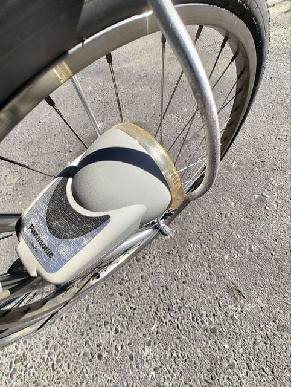
Штатная передняя фара — заметность и свет на дороге в сумерках. Включается кнопкой на пульте ассистента, отдельный фонарь покупать не нужно.
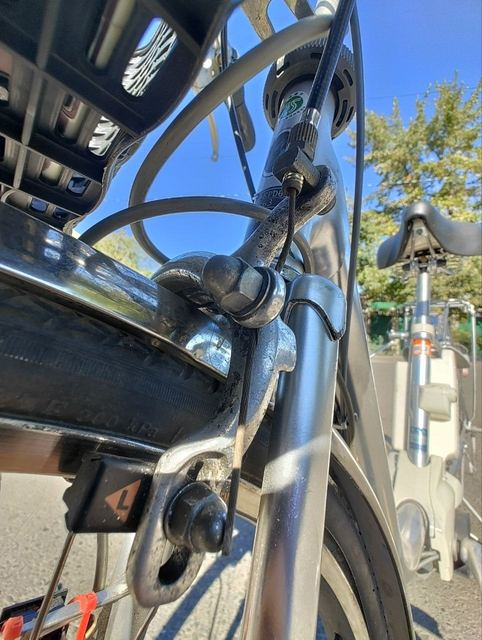
Ободной клещевой тормоз на переднем колесе вместе с задним Inter M даёт уверенное, хорошо дозируемое торможение в городском темпе.
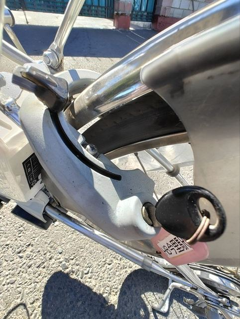
Кольцевой замок на заднем колесе запирается ключом за секунду, а блокировка руля не даёт быстро укатить велосипед. Удобно у магазина; для долгой стоянки добавьте трос или цепь.
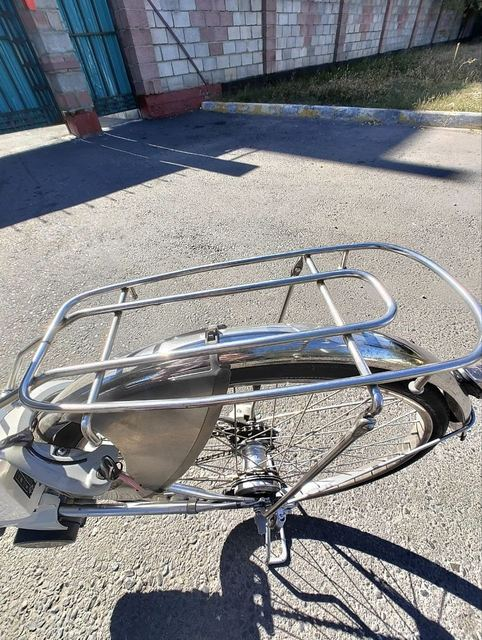
Для сумок, покупок и повседневных вещей. Допустимую нагрузку уточняйте — сообщим по маркировке этого велосипеда.
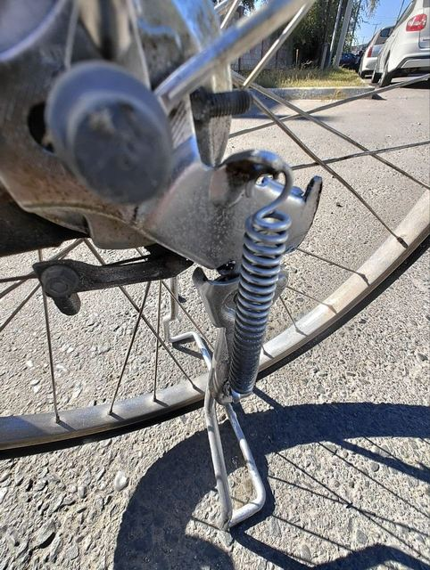
Велосипед стоит ровно на двух опорах — удобно грузить багажник и корзину. Пружинный фиксатор надёжно держит подножку в сложенном положении.
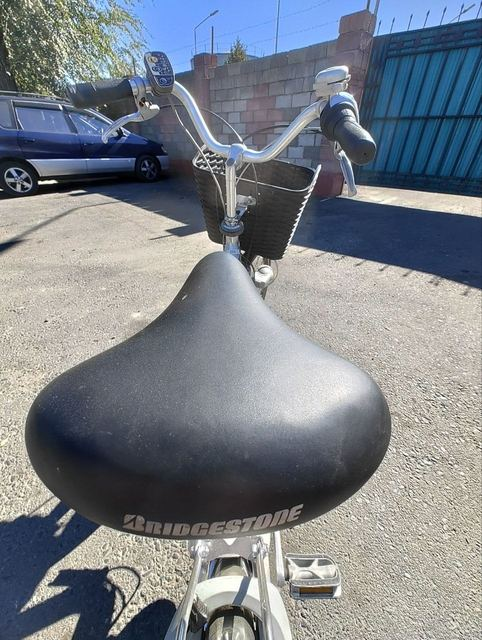
Широкое седло с пружинами смягчает неровности асфальта и бордюры. Высота регулируется под рост быстрозажимным хомутом.
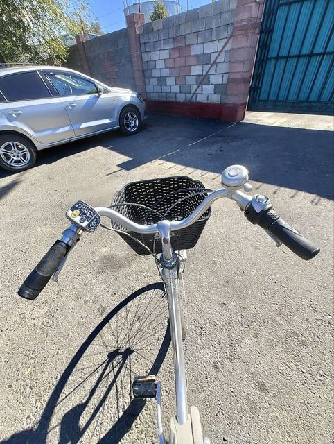
Грипсы Panasonic, тормозные ручки, поворотный переключатель Shimano на 3 скорости, пульт ассистента, звонок, алюминиевые руль и вынос — всё под рукой, посадка прямая и расслабленная.
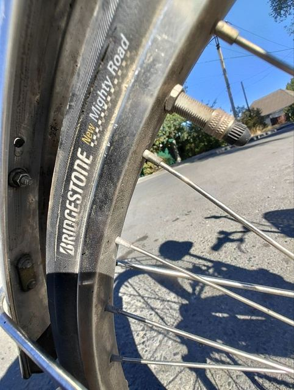
На колёсах японская резина: IRC и Bridgestone New Mighty Road — городские покрышки с плотным протектором. Маркировка на боковинах видна на фото в галерее.
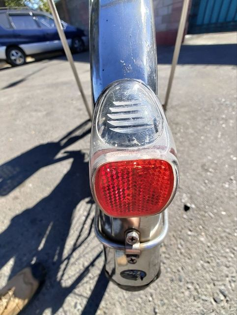
Катафоты спереди (на корзине) и сзади делают велосипед заметным в темноте и дополняют штатную фару.
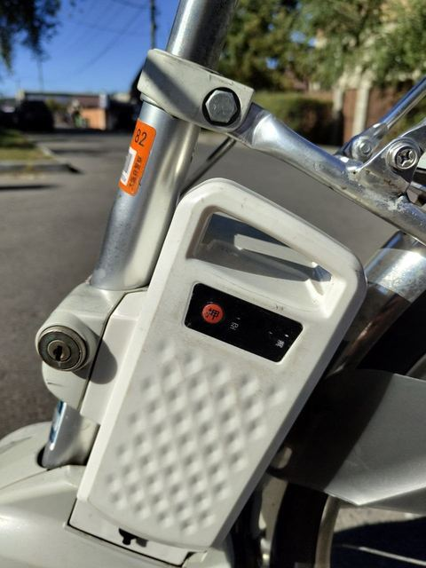
Батарея стоит за подседельной трубой, запирается на ключ и снимается для зарядки дома. На корпусе есть индикатор заряда. Для Panasonic доступны запчасти и новые аккумуляторы — совместимость подберём по модели.
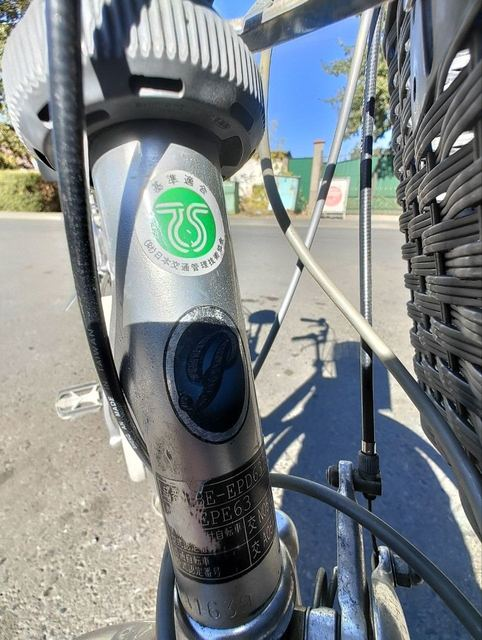
Табличка на рулевой трубе с моделью Panasonic BE-EPE63 и знак TS, на раме наклейка одобрения Японской велосипедной ассоциации (BAA). Это оригинальный велосипед японского внутреннего рынка.
Маркировки на раме показывают, что это велосипед японского внутреннего рынка, а не копия.
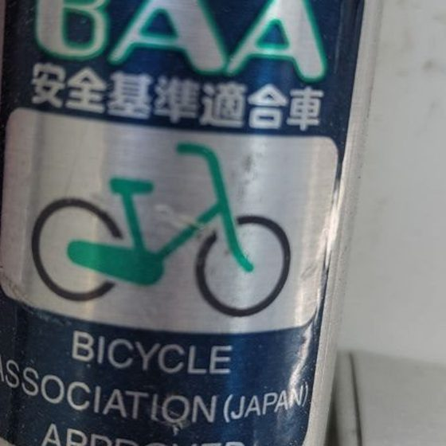
Наклейка BAA: велосипед соответствует японским стандартам безопасности (Bicycle Association Japan).
Заводская табличка Panasonic и знак TS на рулевой трубе — модель легко проверить.
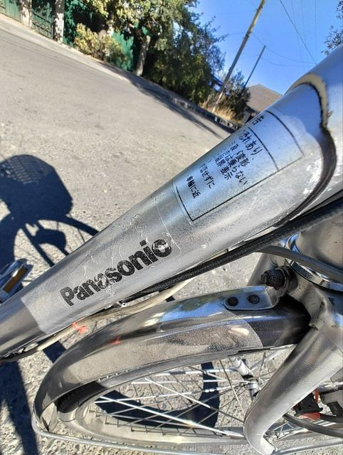
Фирменные логотипы, фара и грипсы Panasonic — оригинальная комплектация.
Можно уточнить наличие, забронировать и согласовать доставку в ваш город.
Доступны запчасти и новые аккумуляторы для ряда систем — совместимость подберём по модели.
Фара, замки, корзина, багажник, подножка, крылья, комфортная посадка и помощь электромотора — детали, которые ценишь не в описании, а каждый день.
Спросить о велосипеде ↗49 реальных фото именно этого велосипеда: маркировки, тормоза, втулка, батарея, колёса и общее состояние. Нажмите, чтобы увеличить.
Перед оплатой подтвердим состояние, ростовку, батарею, цену и сроки доставки.
Уточните цену, наличие и пришлите ваш рост — поможем проверить, подходит ли велосипед.
Запросите дополнительные снимки, состояние аккумулятора и ответы на вопросы.
Доставка по Казахстану. Стоимость, срок и условия бронирования согласовываются индивидуально.
Цена зависит от состояния, комплектации и аккумулятора. Напишите в Telegram — сообщим актуальную стоимость и наличие.
Уточните в личных сообщениях, доступна ли предварительная бронь и какие условия действуют.
Запас хода зависит от состояния аккумулятора, режима ассистента, веса и рельефа. Подскажем по этому экземпляру; также можно подобрать новый аккумулятор Panasonic.
Для ряда моделей Panasonic доступны запчасти и новые аккумуляторы. Совместимость проверим по модели BE-EPE63.
Да, можно согласовать доставку по Казахстану. Срок и стоимость зависят от города и логистики.
Напишите ваш рост — проверим геометрию и регулировку седла до бронирования.
Узнайте цену, запросите видео или обсудите бронирование.